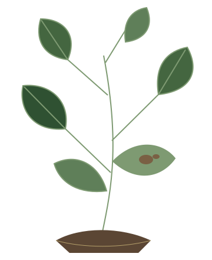
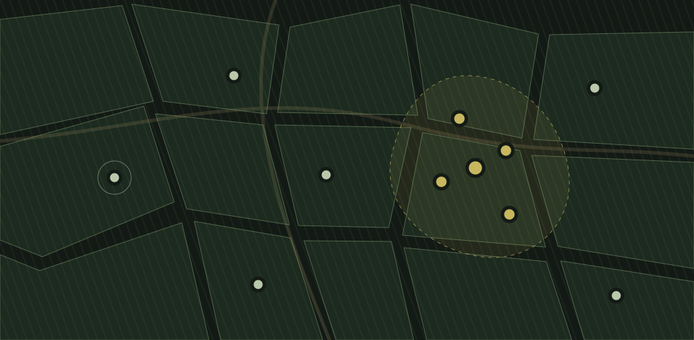

Crop health, seen together
From one diseased leaf
to an early
regional warning.
KrishiRakshak helps farmers identify crop disease and turns local reports into regional agricultural intelligence.
See how it worksA leaf photo is where it begins.

A closer look at crop health.Loading the 3D plant…
A starting point for advice.
Confirm with an agricultural expert.
Shared only when the farmer chooses.
Illustration · no live locationsOne report puts a sign on the map.Explore the officer dashboard ↗
The story begins in soil.
Plant growth starts from the ground. A small change on one leaf can be easy to miss.
01 / A simple beginning
From your field
to a shared picture.
Four connected actions. Each observation helps make the next one more useful.
- 01
Capture
Take a clear photo of the affected leaf.
- 02
Diagnose
Get a possible diagnosis and guidance on what it means.
- 03
Report
Choose to share the result with your field location.
- 04
Connect
Nearby reports reveal patterns for officers to investigate.
Understand the signs.
Decide what to do next.
Review the possible diagnosis and guidance before choosing to report.
02 / For farmers
Less uncertainty.
Right there in
your field.
You know your crop. KrishiRakshak gives you another way to understand changes you notice.
- 01
Choose your language
Support for English, Hindi, Telugu, Tamil, Kannada, Malayalam, Marathi, Bengali and Punjabi.
- 02
Take a photo or upload one
Start with the leaf in front of you.
- 03
Read the result and guidance
A possible diagnosis, with a clear next step.
- 04
Share a report. See the wider picture.
Use the regional map to explore reported disease nearby.
03 / Beyond a single leaf
One report is a signal.
Together, a pattern.
A diagnosis helps one farmer. Reports with location help officers see when similar problems appear close together.

- 01 A farmer shares
- 02 A location connects
- 03 Similar reports gather
- 04 A region comes into focus
04 / For agricultural officers
See across fields.
Know where
to look next.
Bring field reports, disease patterns and regional alerts into one working view.
Open Officer Dashboard ↗A regional view
Dashboard capabilities- Field observations
- Crop, diagnosis & report location
- Regional alerts
- Similar reports grouped by area
- Recent activity
- Report history & disease summaries
Open the dashboard for records from this installation.
05 / Why it matters
Small observations.
Shared awareness.
Easier to speak up.A photo gives a farmer a place to start.
Harder to miss a pattern.Local observations become visible across fields.
More context for action.Officers can investigate emerging regional signals.
Where would you like to go?